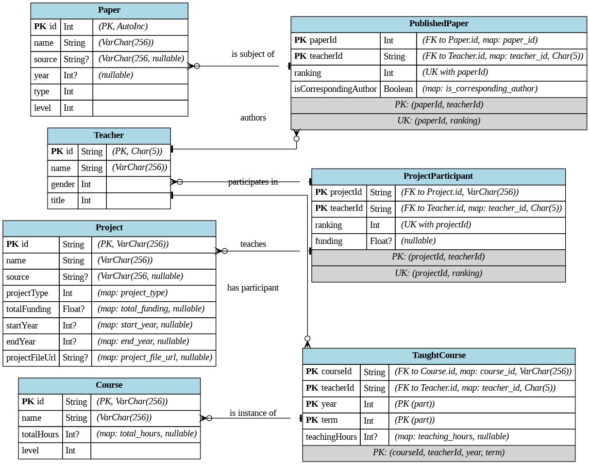

PB21000002 陈加木
架构语言: Next.js, Prisma, Mysql
UI: Tailwind CSS
1.1. 登记发表论文情况 (1.1)
1.2. 登记承担项目情况 (1.2)
1.3. 登记主讲课程情况 (1.3)
1.4. 查询统计 (1.4)
1.4.1 按教师汇总查询教学科研情况：
1.4.2 教学科研工作量统计表导出 (1.4.2.Opt)：
基于 1.4.1 的查询结果。
支持将查询结果按指定格式（见示例）导出为文档（PDF、Word、Excel 等）。
示例格式：
教学科研工作量统计表
姓名: [教师姓名] 工号: [教师工号] 统计年份: [起始年份]-[结束年份]
一、科研情况
1. 论文：
序号 | 论文名称 | 发表刊物/会议 | 发表年份 | 类型 | 级别 | 本人排名 | 是否通讯
---|----------|---------------|----------|------|------|----------|-----------
...| ... | ... | ... | ... | ... | ... | ...
2. 项目：
序号 | 项目名称 | 项目来源/类型 | 立项年份 | 总经费 | 本人排名 | 承担经费
---|----------|---------------|----------|--------|----------|-----------
...| ... | ... | ... | ... | ... | ...
二、教学情况
1. 主讲课程：
序号 | 课程名称 | 开课学期 | 课程总学时 | 本人承担学时
---|----------|----------|------------|-------------
...| ... | ... | ... | ...
!pip install graphviz
from graphviz import Digraph
# Simplified schema definition (manually extracted and structured for this script)
# In a real-world scenario, you might parse the .prisma file,
# but for this example, we'll define it directly.
schema = {
"Teacher": {
"attrs": [
("id", "String", "PK, Char(5)"),
("name", "String", "VarChar(256)"),
("gender", "Int", ""),
("title", "Int", ""),
],
"relations_to_many": [
("PublishedPaper", "publishedPapers"),
("ProjectParticipant", "projectParticipants"),
("TaughtCourse", "taughtCourses"),
]
},
"Paper": {
"attrs": [
("id", "Int", "PK, AutoInc"),
("name", "String", "VarChar(256)"),
("source", "String?", "VarChar(256), nullable"),
("year", "Int?", "nullable"),
("type", "Int", ""),
("level", "Int", ""),
],
"relations_to_many": [
("PublishedPaper", "publishedPapers"),
]
},
"PublishedPaper": {
"attrs": [
("paperId", "Int", "PK (part), FK(Paper.id), map: paper_id"),
("teacherId", "String", "PK (part), FK(Teacher.id), map: teacher_id, Char(5)"),
("ranking", "Int", "UK with paperId"),
("isCorrespondingAuthor", "Boolean", "map: is_corresponding_author"),
],
"relations_to_one": [
("Paper", "paper", "paperId"),
("Teacher", "teacher", "teacherId"),
]
},
"Project": {
"attrs": [
("id", "String", "PK, VarChar(256)"),
("name", "String", "VarChar(256)"),
("source", "String?", "VarChar(256), nullable"),
("projectType", "Int", "map: project_type"),
("totalFunding", "Float?", "map: total_funding, nullable"),
("startYear", "Int?", "map: start_year, nullable"),
("endYear", "Int?", "map: end_year, nullable"),
("projectFileUrl", "String?", "map: project_file_url, nullable"),
],
"relations_to_many": [
("ProjectParticipant", "projectParticipants"),
]
},
"ProjectParticipant": {
"attrs": [
("projectId", "String", "PK (part), FK(Project.id), VarChar(256)"),
("teacherId", "String", "PK (part), FK(Teacher.id), map: teacher_id, Char(5)"),
("ranking", "Int", "UK with projectId"),
("funding", "Float?", "nullable"),
],
"relations_to_one": [
("Project", "project", "projectId"),
("Teacher", "teacher", "teacherId"),
]
},
"Course": {
"attrs": [
("id", "String", "PK, VarChar(256)"),
("name", "String", "VarChar(256)"),
("totalHours", "Int?", "map: total_hours, nullable"),
("level", "Int", ""),
],
"relations_to_many": [
("TaughtCourse", "taughtCourses"),
]
},
"TaughtCourse": {
"attrs": [
("courseId", "String", "PK (part), FK(Course.id), map: course_id, VarChar(256)"),
("teacherId", "String", "PK (part), FK(Teacher.id), map: teacher_id, Char(5)"),
("year", "Int", "PK (part)"),
("term", "Int", "PK (part)"),
("teachingHours", "Int?", "map: teaching_hours, nullable"),
],
"relations_to_one": [
("Course", "course", "courseId"),
("Teacher", "teacher", "teacherId"),
]
}
}
def create_er_diagram(schema_data, filename="er_diagram", format="png"):
dot = Digraph(comment='ER Diagram', graph_attr={'rankdir': 'LR', 'splines': 'ortho'})
dot.attr('node', shape='plain') # Use plain shape for HTML-like labels
# Add nodes (entities)
for entity_name, entity_data in schema_data.items():
label_parts = [f'<TR><TD COLSPAN="3" BGCOLOR="lightblue"><B>{entity_name}</B></TD></TR>']
for attr_name, attr_type, attr_notes in entity_data["attrs"]:
notes_str = f" <I>({attr_notes})</I>" if attr_notes else ""
pk_fk_indicator = ""
if "PK" in attr_notes:
pk_fk_indicator = "<B>PK</B> "
elif "FK" in attr_notes:
pk_fk_indicator = "<I>FK</I> "
label_parts.append(f'<TR><TD ALIGN="LEFT">{pk_fk_indicator}{attr_name}</TD><TD ALIGN="LEFT">{attr_type}</TD><TD ALIGN="LEFT">{notes_str.replace("PK (part), ", "").replace("FK(", "FK to ").replace("),",",")}</TD></TR>')
# Add composite PK/UK info if not directly on attributes
if entity_name == "PublishedPaper":
label_parts.append(f'<TR><TD COLSPAN="3" BGCOLOR="lightgrey"><I>PK: (paperId, teacherId)</I></TD></TR>')
label_parts.append(f'<TR><TD COLSPAN="3" BGCOLOR="lightgrey"><I>UK: (paperId, ranking)</I></TD></TR>')
elif entity_name == "ProjectParticipant":
label_parts.append(f'<TR><TD COLSPAN="3" BGCOLOR="lightgrey"><I>PK: (projectId, teacherId)</I></TD></TR>')
label_parts.append(f'<TR><TD COLSPAN="3" BGCOLOR="lightgrey"><I>UK: (projectId, ranking)</I></TD></TR>')
elif entity_name == "TaughtCourse":
label_parts.append(f'<TR><TD COLSPAN="3" BGCOLOR="lightgrey"><I>PK: (courseId, teacherId, year, term)</I></TD></TR>')
node_label = '<<TABLE BORDER="0" CELLBORDER="1" CELLSPACING="0" CELLPADDING="4">' + "".join(label_parts) + '</TABLE>>'
dot.node(entity_name, label=node_label)
# Add edges (relationships)
# Using Crow's Foot notation conventions for arrows:
# arrowhead/arrowtail:
# 'tee' or 'none' for 'one' ( perpendicular line | )
# 'crow' for 'many' ( >-< )
# 'dot' for 'zero or one' ( o )
# 'odot' for 'zero or one' ( o| )
# 'crowodot' for 'zero or many' ( o>-< )
# For explicit join tables like PublishedPaper, ProjectParticipant, TaughtCourse:
# Entity1 (1) -- (0..N) JoinTable (N..1) -- (1) Entity2
# Teacher <-> PublishedPaper <-> Paper
dot.edge('Teacher', 'PublishedPaper', label='authors',
arrowhead='crowodot', # Teacher has 0..N PublishedPapers
arrowtail='tee', # PublishedPaper belongs to 1 Teacher (conceptually, FK is in PublishedPaper)
dir='both') # dir='both' with different heads/tails can represent this
dot.edge('Paper', 'PublishedPaper', label='is subject of',
arrowhead='crowodot', # Paper has 0..N PublishedPapers
arrowtail='tee', # PublishedPaper references 1 Paper
dir='both')
# Teacher <-> ProjectParticipant <-> Project
dot.edge('Teacher', 'ProjectParticipant', label='participates in',
arrowhead='crowodot',
arrowtail='tee',
dir='both')
dot.edge('Project', 'ProjectParticipant', label='has participant',
arrowhead='crowodot',
arrowtail='tee',
dir='both')
# Teacher <-> TaughtCourse <-> Course
dot.edge('Teacher', 'TaughtCourse', label='teaches',
arrowhead='crowodot',
arrowtail='tee',
dir='both')
dot.edge('Course', 'TaughtCourse', label='is instance of',
arrowhead='crowodot',
arrowtail='tee',
dir='both')
# Render the graph
dot.render(filename, view=True, format=format)
print(f"ER Diagram saved as {filename}.{format}")
if __name__ == '__main__':
create_er_diagram(schema, filename="prisma_er_diagram", format="png")

核心实体表：
Teacher (教师表): 存储教师基本信息 (工号 id, 姓名, 性别, 职称)。Paper (论文表): 存储论文信息 (自增 id, 名称, 来源, 年份, 类型, 级别)。Project (项目表): 存储项目信息 (项目编号 id, 名称, 来源, 类型, 经费, 起止年份, 最近新增了项目文件链接 project_file_url)。Course (课程表): 存储课程信息 (课程号 id, 名称, 总学时, 级别)。关系/连接表 (实现多对多关系)：
PublishedPaper (发表论文表):
Teacher 和 Paper。(paperId, teacherId)。(paperId, ranking) (同一论文排名唯一)。ProjectParticipant (项目参与者表):
Teacher 和 Project。(projectId, teacherId)。(projectId, ranking) (同一项目排名唯一)。TaughtCourse (授课表):
Teacher 和 Course。(courseId, teacherId, year, term)，使其能唯一标识一次授课活动。之前 year 字段是可选的，后改为必填。这个数据库符合 3NF
PublishedPaper，其 ranking 依赖于 paperId 和 teacherId 两者）。Teacher 表中，name, gender, title 都直接依赖于 Teacher.id，而 gender 并不决定 title。类似地，在 Project 表中，projectType 不会决定 source。连接表（如 PublishedPaper）中的属性（如 ranking）直接描述该“教师-论文”关系，依赖于联合主键。上传至 S3,返回链接
类似后端 API,整个 handler
user@fedora ~/D/u/p/api (master)> find .
.
./courses
./courses/create.ts
./courses/delete.ts
./courses/edit.ts
./courses/list.ts
./papers
./papers/create.ts
./papers/delete.ts
./papers/edit.ts
./papers/list.ts
./projects
./projects/create.ts
./projects/delete.ts
./projects/edit.ts
./projects/list.ts
./projects/upload.ts
./search
./search/search.ts
./teachers
./teachers/create.ts
./teachers/delete.ts
./teachers/edit.ts
./teachers/list.ts
user@fedora ~/D/u/p/api (master)>
await prisma.$transactionuser@fedora ~/D/u/p/api (master)> grep -r "await prisma.$transaction"
courses/create.ts: const existingCourse = await prisma.course.findUnique({
courses/create.ts: const existingTeachers = await prisma.teacher.findMany({
courses/create.ts: const course = await prisma.course.create({
courses/delete.ts: await prisma.taughtCourse.deleteMany({
courses/delete.ts: await prisma.course.delete({
courses/edit.ts: const existingTeachers = await prisma.teacher.findMany({
courses/edit.ts: const course = await prisma.course.update({
courses/edit.ts: await prisma.taughtCourse.deleteMany({
courses/edit.ts: await prisma.taughtCourse.createMany({
courses/list.ts: courses = await prisma.course.findMany({
courses/list.ts: courses = await prisma.course.findMany({
papers/create.ts: const existingTeachers = await prisma.teacher.findMany({
papers/create.ts: const existingPaper = await prisma.paper.findFirst({
papers/create.ts: const paper = await prisma.$transaction(async (tx) => {
papers/delete.ts: await prisma.publishedPaper.deleteMany({
papers/delete.ts: await prisma.paper.delete({
papers/edit.ts: const existingTeachers = await prisma.teacher.findMany({
papers/edit.ts: const paper = await prisma.paper.update({
papers/edit.ts: await prisma.$transaction(async (tx) => {
papers/list.ts: papers = await prisma.paper.findMany({
papers/list.ts: papers = await prisma.paper.findMany({
projects/create.ts: const existingTeachers = await prisma.teacher.findMany({
projects/create.ts: const existingProject = await prisma.project.findFirst({
projects/create.ts: const project = await prisma.$transaction(async (tx) => {
projects/delete.ts: await prisma.projectParticipant.deleteMany({
projects/delete.ts: await prisma.project.delete({
projects/edit.ts: const existingTeachers = await prisma.teacher.findMany({
projects/edit.ts: const project = await prisma.project.update({
projects/edit.ts: await prisma.$transaction(async (tx) => {
projects/list.ts: projects = await prisma.project.findMany({
projects/list.ts: projects = await prisma.project.findMany({
search/search.ts: const teacher = await prisma.teacher.findUnique({
teachers/create.ts: const existingTeacher = await prisma.teacher.findFirst({
teachers/create.ts: const teacher = await prisma.teacher.create({
teachers/delete.ts: await prisma.publishedPaper.deleteMany({
teachers/delete.ts: await prisma.projectParticipant.deleteMany({
teachers/delete.ts: await prisma.taughtCourse.deleteMany({
teachers/delete.ts: const teacher = await prisma.teacher.delete({
teachers/edit.ts: const teacher = await prisma.teacher.update({
teachers/list.ts: teachers = await prisma.teacher.findMany({
teachers/list.ts: teachers = await prisma.teacher.findMany();
增加触发器
-- --------------------------------------------------------------------------------
-- Teacher Triggers
-- --------------------------------------------------------------------------------
DELIMITER $$
CREATE TRIGGER trg_teacher_id_length_insert
BEFORE INSERT ON Teacher
FOR EACH ROW
BEGIN
IF CHAR_LENGTH(NEW.id) != 5 THEN
SIGNAL SQLSTATE '45000' SET MESSAGE_TEXT = 'Teacher ID must be exactly 5 characters long.';
END IF;
END$$
DELIMITER ;
DELIMITER $$
CREATE TRIGGER trg_teacher_id_length_update
BEFORE UPDATE ON Teacher
FOR EACH ROW
BEGIN
IF CHAR_LENGTH(NEW.id) != 5 THEN
SIGNAL SQLSTATE '45000' SET MESSAGE_TEXT = 'Teacher ID must be exactly 5 characters long.';
END IF;
END$$
DELIMITER ;
-- Trigger to prevent empty teacher names
DELIMITER $$
CREATE TRIGGER trg_teacher_name_not_empty_insert
BEFORE INSERT ON Teacher
FOR EACH ROW
BEGIN
IF TRIM(NEW.name) = '' THEN
SIGNAL SQLSTATE '45000' SET MESSAGE_TEXT = 'Teacher name cannot be empty.';
END IF;
END$$
DELIMITER ;
DELIMITER $$
CREATE TRIGGER trg_teacher_name_not_empty_update
BEFORE UPDATE ON Teacher
FOR EACH ROW
BEGIN
IF TRIM(NEW.name) = '' THEN
SIGNAL SQLSTATE '45000' SET MESSAGE_TEXT = 'Teacher name cannot be empty.';
END IF;
END$$
DELIMITER ;
DELIMITER $$
CREATE TRIGGER trg_teacher_gender_check_insert
BEFORE INSERT ON Teacher
FOR EACH ROW
BEGIN
IF NEW.gender NOT IN (0, 1, 2) THEN -- Assuming 0, 1, 2 are valid
SIGNAL SQLSTATE '45000' SET MESSAGE_TEXT = 'Invalid gender value for Teacher.';
END IF;
END$$
DELIMITER ;
-- --------------------------------------------------------------------------------
-- Paper Triggers
-- --------------------------------------------------------------------------------
-- Trigger to ensure paper year is reasonable (e.g., not in the distant future or too far past)
DELIMITER $$
CREATE TRIGGER trg_paper_year_check_insert
BEFORE INSERT ON Paper
FOR EACH ROW
BEGIN
IF NEW.year IS NOT NULL AND (NEW.year < 1900 OR NEW.year > YEAR(CURDATE()) + 5) THEN
SIGNAL SQLSTATE '45000' SET MESSAGE_TEXT = 'Paper year seems invalid.';
END IF;
END$$
DELIMITER ;
DELIMITER $$
CREATE TRIGGER trg_paper_year_check_update
BEFORE UPDATE ON Paper
FOR EACH ROW
BEGIN
IF NEW.year IS NOT NULL AND (NEW.year < 1900 OR NEW.year > YEAR(CURDATE()) + 5) THEN
SIGNAL SQLSTATE '45000' SET MESSAGE_TEXT = 'Paper year seems invalid.';
END IF;
END$$
DELIMITER ;
-- --------------------------------------------------------------------------------
-- PublishedPaper Triggers
-- --------------------------------------------------------------------------------
-- Trigger to ensure ranking is positive
DELIMITER $$
CREATE TRIGGER trg_published_paper_ranking_check_insert
BEFORE INSERT ON PublishedPaper
FOR EACH ROW
BEGIN
IF NEW.ranking <= 0 THEN
SIGNAL SQLSTATE '45000' SET MESSAGE_TEXT = 'PublishedPaper ranking must be a positive integer.';
END IF;
END$$
DELIMITER ;
DELIMITER $$
CREATE TRIGGER trg_published_paper_ranking_check_update
BEFORE UPDATE ON PublishedPaper
FOR EACH ROW
BEGIN
IF NEW.ranking <= 0 THEN
SIGNAL SQLSTATE '45000' SET MESSAGE_TEXT = 'PublishedPaper ranking must be a positive integer.';
END IF;
END$$
DELIMITER ;
-- --------------------------------------------------------------------------------
-- Project Triggers
-- --------------------------------------------------------------------------------
-- Trigger to ensure project end_year is not before start_year
DELIMITER $$
CREATE TRIGGER trg_project_year_check_insert
BEFORE INSERT ON Project
FOR EACH ROW
BEGIN
IF NEW.end_year IS NOT NULL AND NEW.start_year IS NOT NULL AND NEW.end_year < NEW.start_year THEN
SIGNAL SQLSTATE '45000' SET MESSAGE_TEXT = 'Project end_year cannot be before start_year.';
END IF;
END$$
DELIMITER ;
DELIMITER $$
CREATE TRIGGER trg_project_year_check_update
BEFORE UPDATE ON Project
FOR EACH ROW
BEGIN
IF NEW.end_year IS NOT NULL AND NEW.start_year IS NOT NULL AND NEW.end_year < NEW.start_year THEN
SIGNAL SQLSTATE '45000' SET MESSAGE_TEXT = 'Project end_year cannot be before start_year.';
END IF;
END$$
DELIMITER ;
-- Trigger to ensure project total_funding is not negative
DELIMITER $$
CREATE TRIGGER trg_project_funding_check_insert
BEFORE INSERT ON Project
FOR EACH ROW
BEGIN
IF NEW.total_funding IS NOT NULL AND NEW.total_funding < 0 THEN
SIGNAL SQLSTATE '45000' SET MESSAGE_TEXT = 'Project total_funding cannot be negative.';
END IF;
END$$
DELIMITER ;
DELIMITER $$
CREATE TRIGGER trg_project_funding_check_update
BEFORE UPDATE ON Project
FOR EACH ROW
BEGIN
IF NEW.total_funding IS NOT NULL AND NEW.total_funding < 0 THEN
SIGNAL SQLSTATE '45000' SET MESSAGE_TEXT = 'Project total_funding cannot be negative.';
END IF;
END$$
DELIMITER ;
-- Trigger to ensure ProjectParticipant funding is not negative
DELIMITER $$
CREATE TRIGGER trg_project_participant_funding_check_insert
BEFORE INSERT ON ProjectParticipant
FOR EACH ROW
BEGIN
IF NEW.funding IS NOT NULL AND NEW.funding < 0 THEN
SIGNAL SQLSTATE '45000' SET MESSAGE_TEXT = 'ProjectParticipant funding cannot be negative.';
END IF;
END$$
DELIMITER ;
DELIMITER $$
CREATE TRIGGER trg_project_participant_funding_check_update
BEFORE UPDATE ON ProjectParticipant
FOR EACH ROW
BEGIN
IF NEW.funding IS NOT NULL AND NEW.funding < 0 THEN
SIGNAL SQLSTATE '45000' SET MESSAGE_TEXT = 'ProjectParticipant funding cannot be negative.';
END IF;
END$$
DELIMITER ;
-- --------------------------------------------------------------------------------
-- Course Triggers
-- --------------------------------------------------------------------------------
-- Trigger to prevent empty course names
DELIMITER $$
CREATE TRIGGER trg_course_name_not_empty_insert
BEFORE INSERT ON Course
FOR EACH ROW
BEGIN
IF TRIM(NEW.name) = '' THEN
SIGNAL SQLSTATE '45000' SET MESSAGE_TEXT = 'Course name cannot be empty.';
END IF;
END$$
DELIMITER ;
DELIMITER $$
CREATE TRIGGER trg_course_name_not_empty_update
BEFORE UPDATE ON Course
FOR EACH ROW
BEGIN
IF TRIM(NEW.name) = '' THEN
SIGNAL SQLSTATE '45000' SET MESSAGE_TEXT = 'Course name cannot be empty.';
END IF;
END$$
DELIMITER ;
-- Trigger to ensure total_hours is positive if provided
DELIMITER $$
CREATE TRIGGER trg_course_total_hours_check_insert
BEFORE INSERT ON Course
FOR EACH ROW
BEGIN
IF NEW.total_hours IS NOT NULL AND NEW.total_hours <= 0 THEN
SIGNAL SQLSTATE '45000' SET MESSAGE_TEXT = 'Course total_hours must be positive if specified.';
END IF;
END$$
DELIMITER ;
DELIMITER $$
CREATE TRIGGER trg_course_total_hours_check_update
BEFORE UPDATE ON Course
FOR EACH ROW
BEGIN
IF NEW.total_hours IS NOT NULL AND NEW.total_hours <= 0 THEN
SIGNAL SQLSTATE '45000' SET MESSAGE_TEXT = 'Course total_hours must be positive if specified.';
END IF;
END$$
DELIMITER ;
-- --------------------------------------------------------------------------------
-- TaughtCourse Triggers
-- --------------------------------------------------------------------------------
-- Trigger to ensure teaching_hours is positive if provided
DELIMITER $$
CREATE TRIGGER trg_taught_course_hours_check_insert
BEFORE INSERT ON TaughtCourse
FOR EACH ROW
BEGIN
IF NEW.teaching_hours IS NOT NULL AND NEW.teaching_hours <= 0 THEN
SIGNAL SQLSTATE '45000' SET MESSAGE_TEXT = 'TaughtCourse teaching_hours must be positive if specified.';
END IF;
END$$
DELIMITER ;
DELIMITER $$
CREATE TRIGGER trg_taught_course_hours_check_update
BEFORE UPDATE ON TaughtCourse
FOR EACH ROW
BEGIN
IF NEW.teaching_hours IS NOT NULL AND NEW.teaching_hours <= 0 THEN
SIGNAL SQLSTATE '45000' SET MESSAGE_TEXT = 'TaughtCourse teaching_hours must be positive if specified.';
END IF;
END$$
DELIMITER ;
加入触发器
SHOW TRIGGERS;
DROP TRIGGER trigger_name_to_delete;
SELECT TRIGGER_NAME FROM information_schema.TRIGGERS;
类似后端的代码 if 语句，parseInt，Object.values，等等